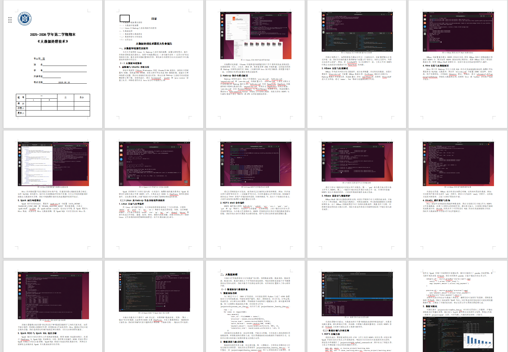
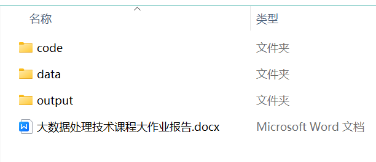

Agent 根据需求生成 workflow DAG，再调用对应 Skill 或工具；核心脚本负责状态、依赖、STOP 和产物校验。
调研、GitHub 源码候选、项目改造、计算和真实执行，为下游提供可信基础。
组合真实截图、AI 资产、DSL 图示和数据图表，并在采用前执行视觉 STOP。
填写或创建 Word，并通过外部 pptx Skill 生成演示稿，共用已批准的任务与视觉证据。
只整理需求声明的代码、数据、媒体和文档，生成可检查目录、压缩包与清单。
支持视频分析、真实录屏、创建和处理，并记录时长、编码与抽帧验证结果。
workflow、run state 和 artifact manifest 都落盘，另一位 Agent 可以继续而不猜进度。
Agent 负责理解需求和调用模块，Python 只做确定性的 DAG、状态、审批和产物检查，兼顾灵活性与可审计性。
# 只需发送这段话给 Agent 请读取并初始化这个 skill： https://github.com/qiuy-collab/AutoFlow.skill # Agent 编排： 1. 选择 recipe / 生成 DAG 2. PLAN_STOP 确认范围 3. 按依赖执行模块 4. 处理 SOURCE / VISUAL STOP 5. 登记并校验 artifacts 6. DELIVERY_STOP 签收
先确认方向，再处理源码、执行任务、审查视觉、装配产物和签收交付。
确认 DAG、范围与产物
GitHub 候选由用户选择
调研、构建、计算或实操
审查图片、图表和 PPT
生成 Word、PPT、视频与包
验证清单并最终签收
以下是一个《大数据处理技术》课程大作业的完整示例：作业要求 → 报告 + 代码 + 数据 + 图表 → 交付文件。


AutoFlow 可以显式调用，也会在明显需要多个相互依赖产物时自动触发。
数据生成、清洗、分析、可视化
命令步骤、终端截图、实验说明
代码、运行结果、课程设计
ER 图、流程图、表结构设计
模块设计、系统说明、运行效果
按汇报逻辑整理演示稿
录制操作过程，整理提交材料
保留模板结构，插图排版